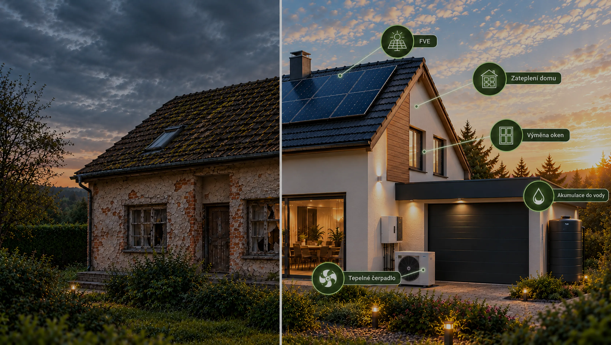

Přehled podpory z programu Nová zelená úsporám: bezúročný úvěr, přímá dotace pro domácnosti s nižšími příjmy a postup žádosti. Stav k říjnu 2026.

Od roku 2026 je hlavní formou podpory bezúročný úvěr z programu Nová zelená úsporám (NZÚ), který spravuje Státní fond životního prostředí (SFŽP). Přímá dotace zůstala jen pro domácnosti s nižšími příjmy.
Zateplení
Fasáda, střecha, strop pod půdou, podlahy a konstrukce k zemině.
Výměna oken a dveří
Výplně otvorů, případně stínicí technika.
Zdroje tepla
Tepelná čerpadla, kotle a kamna na biomasu, napojení na soustavu zásobování teplem.
Příprava teplé vody
Solární nebo fotovoltaický ohřev, tepelné čerpadlo pro ohřev vody.
Fotovoltaika
Panely a lithiová baterie. U bytových domů je nejmenší podporovaný výkon 5 kWp, nejvyšší 3 kWp na zapojený byt a připojení musí být třífázové.
Větrání s rekuperací
Řízené větrání se zpětným získáváním tepla.
Doplňková opatření
Využití tepla z odpadní vody, zelená střecha a hospodaření s vodou – jen v kombinaci se zateplením nebo jiným základním opatřením.
Limity pro jednotlivá opatření jsou v závazných pokynech programu na novazelenausporam.cz.
U bytových domů renovační pas (plán renovace od certifikovaného poradce) při dílčí renovaci, energetické hodnocení s průkazem energetické náročnosti budovy (PENB) při komplexní.
Elektronicky přes portál zadosti.sfzp.cz. Za SVJ jedná statutární orgán.
Po kladném posouzení SFŽP se sjedná úvěr u zapojené banky nebo stavební spořitelny. Bez schválené žádosti banka bezúročný úvěr z programu neposkytne.
Dotace se nevrací, úvěr ano. Stát u úvěru hradí úroky a poplatky, takže se splácí jen půjčená částka. Výhodou oproti běžnému úvěru je nulové úrokové zatížení – pořizovací cena renovace tak neklesá, ale celkové finanční náklady ano.
U bytového domu ne – žádá SVJ nebo bytové družstvo jako celek. Majitelé rodinných domů žádají sami. Vlastník bytu v bytovém domě se na žádosti nepodílí přímo, záleží na rozhodnutí SVJ.
Ano. Úvěr lze sjednat na vyšší částku, než program kompenzuje – stát pak hradí úroky jen do stanovených limitů. Zbývající část lze hradit z fondu oprav, vlastních zdrojů nebo běžného bankovního úvěru.
Podmínky zapojení bank zveřejnilo Ministerstvo životního prostředí 16. 9. 2026 a první instituce úvěry spouštějí od podzimu 2026. Aktuální seznam zapojených bank je na webu programu novazelenausporam.cz.
Zkuste vyhledat dané téma na webu.